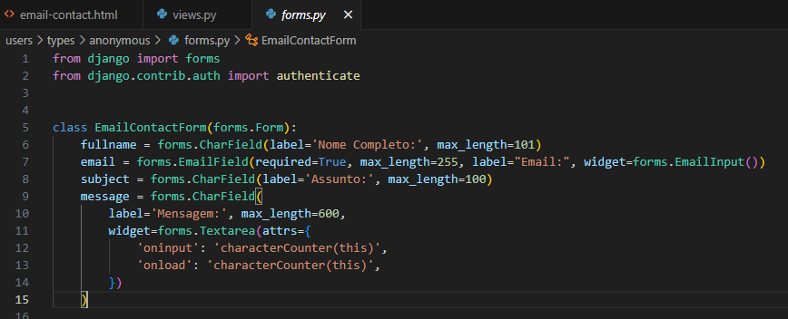
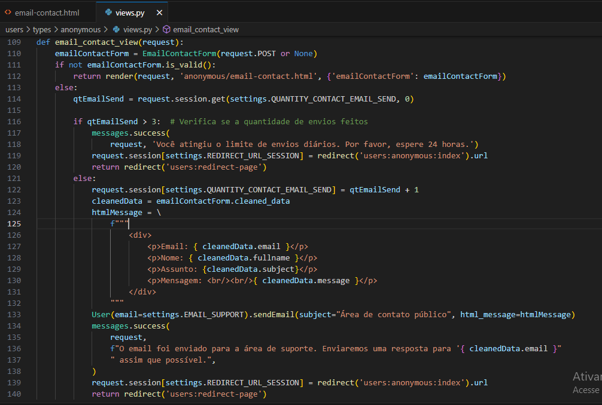
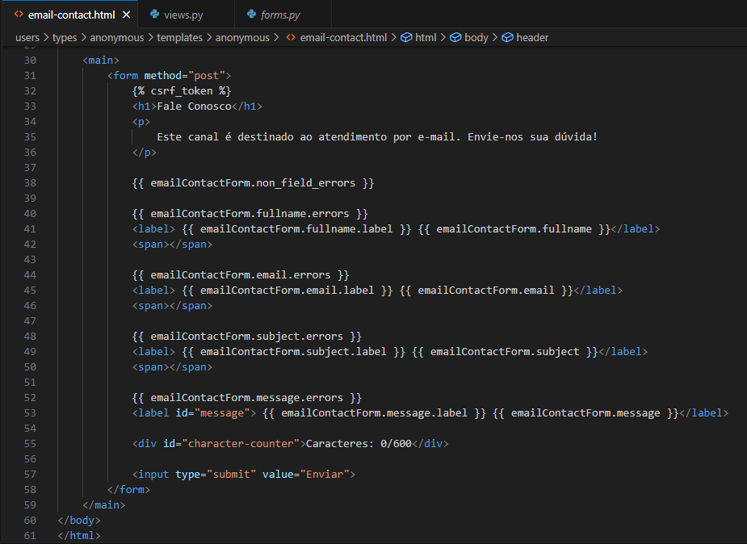

Nomuh
Esta página tem como objetivo oferecer uma visão geral do trabalho que realizei nesse projeto com fotos e vídeos logo abaixo. Devido à natureza sensível de todo o código deste projeto e para preservar a atribuição intelectual do algoritmo desenvolvido, não podemos disponibilizar o repositório publicamente.
A Nomuh foi um projeto idealizado por mim ainda na faculdade como desenvolvimento para meu tcc, teve seu começo em 2021 e termino em Julho de 2023. Seu principal objeto era disponibilizar a busca do usuário por medicamentos que fossem livres da sua restrição de alergênica. Com isso desenvolvemos um algoritmo usando conceitos de Sistema de Recomendação.
No âmbito desse projeto, assumi a responsabilidade pelo desenvolvimento do front-end do site, que envolveu a criação de mais de 25 telas distintas. Além disso, participei da integração de APIs, como o Mercado Pago, e no gerenciamento de e-mails. A Nomuh representou mais do que um projeto acadêmico; ela foi minha primeira incursão no mundo empresarial e tecnológico, proporcionando-me uma valiosa experiência em busca de soluções para desafios de programação e empresariais.
Demonstrativo
O vídeo demonstra o site em funcionamento, cumprindo sua proposta de busca por medicamentos com base nas restrições de saúde. Observe também as telas e a abordagem dos elementos
Nas próximas três imagens (Forms, Views, HTML), será possível obter uma visão mais detalhada da estrutura do meu código neste projeto. Essa estrutura é responsável pelo contato dos usuários através de e-mails com a plataforma."
Formulário
A imagem ilustra a organização e implementação do formulário de contato por e-mail na plataforma
Views
Implementação do código da view responsável por permitir que os usuários entrem em contato com a plataforma
HTML
Integração do formulário de contato por e-mail ao código HTML, conforme mostrado na imagem acima